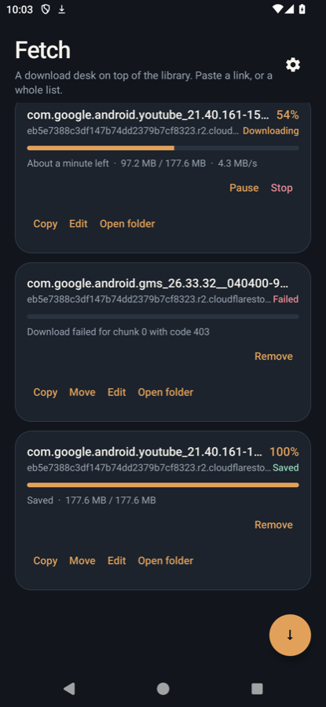
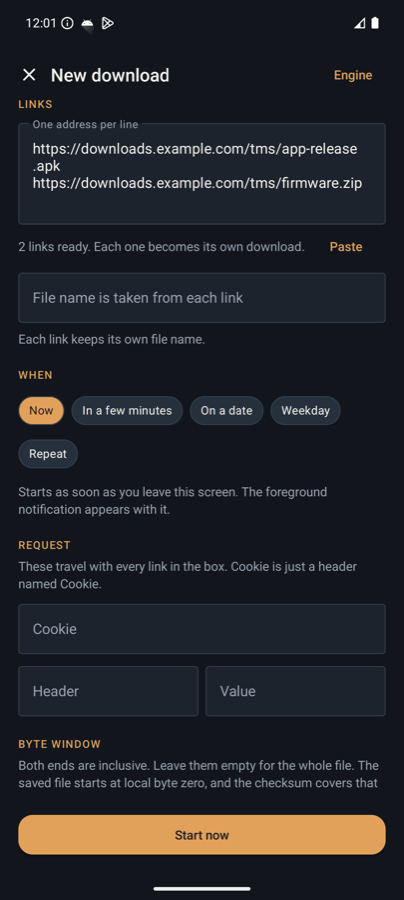
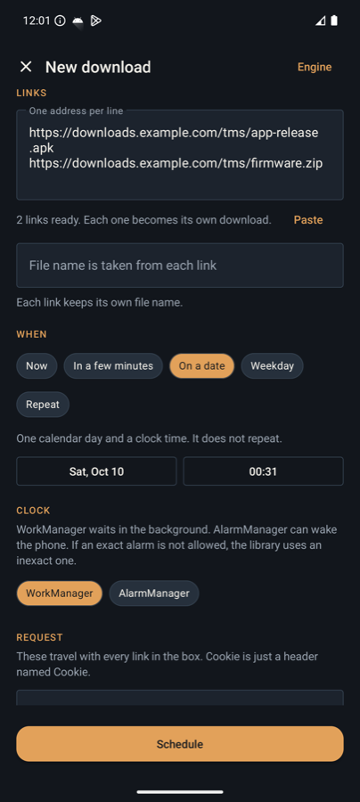
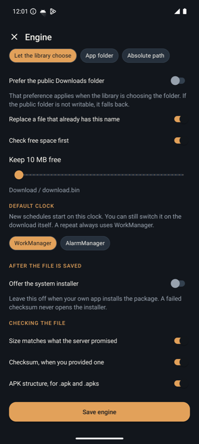
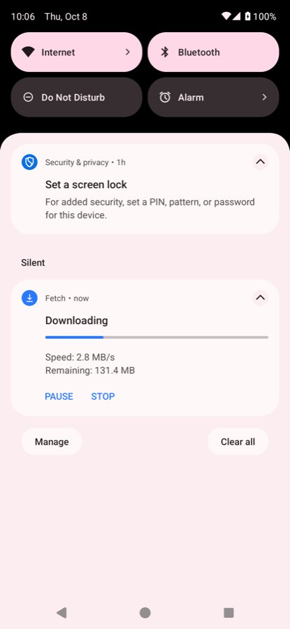
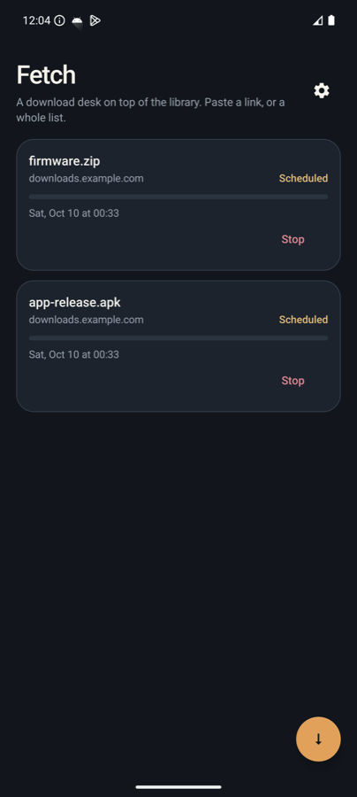

Fetch documentation
The sample, one file at a time.
Each source file has its own page. The note sits beside the lines it describes. The install path, with a Kotlin and Java switch on every sample, is the install guide.






ManifestWhat the system is allowed to startAndroidManifest.xml
FetchApp.ktLoad the queue and configure the serviceFetchApp.kt
EngineSettings.ktEvery switch, saved on the deviceEngineSettings.kt
DownloadDesk.ktThe only calls into the libraryDownloadDesk.kt
LinkParser.ktPaste and share become URLsLinkParser.kt
ComposerActivity.ktNew download, range, checksum, clockComposerActivity.kt
QueueActivity.ktPause, resume, copy, move, renameQueueActivity.kt
QueueAdapter.ktWhich button a row showsQueueAdapter.kt
Transfer.ktThe row objectTransfer.kt
TransferStore.ktListener callbacks become rowsTransferStore.kt
SavedFiles.ktCopy bytes and read the new pathSavedFiles.kt
FolderActivity.ktList a directory Fetch can seeFolderActivity.kt
SettingsActivity.ktSave the engine, mail, GitHubSettingsActivity.kt
FetchForeground.ktIs a Fetch screen in front?FetchForeground.kt
ClipOffer.ktOffer a copied link onceClipOffer.kt
ClipWatchService.ktDialog in front, notification behindClipWatchService.kt
OfferActivity.ktStart this download?OfferActivity.kt
FetchWidget.ktA glance on the home screenFetchWidget.kt
Theme and motionColors and the list animationcolors.xml